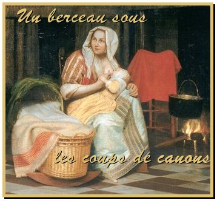
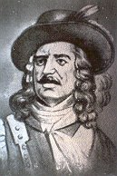
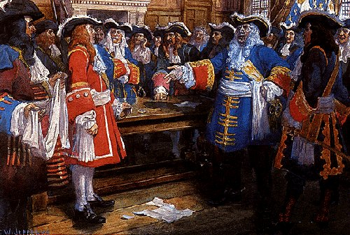
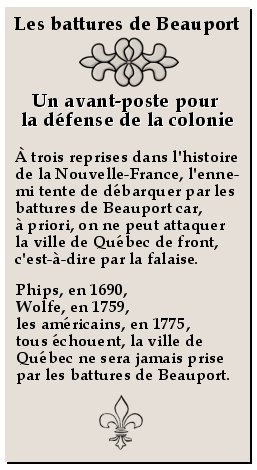
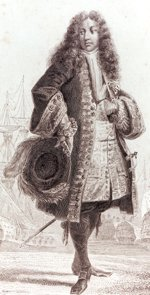
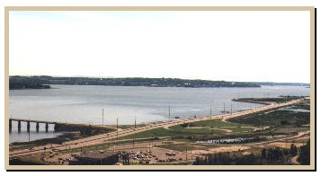
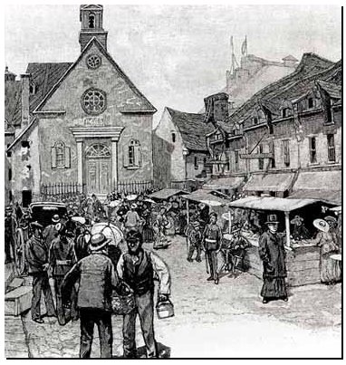

|

Pierre
Choret naît le 24 février 1690 à Beauport, il y est baptisé
dans l'église Notre-Dame de la Miséricorde, ses parrains sont
Pierre Parent et Marie Chauveau.
Pierre
est le deuxième des dix-huit enfants de Pierre le cadet et
Marie-Anne Beaugis. Sa sœur aînée, Marie-Anne, étant
décédée dans les semaines suivant sa naissance en 1688,
Pierre devient l'aîné des enfants de la troisième
génération de notre lignée Charette. Ses
deux grands-parents Beaugis sont vivants, Michel décédant en
1717, et son épouse, Madeleine Dubois, en 1721. Du
côté paternel, seule sa grand-mère Choret est vivante à la
naissance de Pierre. Sébastienne Veillon décède en
1698. Pierre Choret a aussi de nombreux oncles, tantes,
cousins et cousines. Cette nombreuse famille vit dans les
environs, à Beauport ou à l'Île d'Orléans. UN
BERCEAU SOUS LES COUPS DE CANONS Les
premiers mois de la vie de Pierre Choret sont pour le moins
mouvementés. Au cours des années 1680,
Français et Anglais
se disputent le contrôle du commerce des fourrures sur le continent
nord-américain. De part et d'autre, on ne se gêne pas pour se faire la guerre par tribus amérindiennes
interposées. Les colonies britanniques arment ainsi les Iroquois en les
encourageant fortement à attaquer par tous les moyens les établissements français.
La situation s'envenime encore davantage lorsque, au début de l'année 1689, la
France et l'Angleterre se déclarent officiellement la guerre en Europe. C'est
cette même année, dans la nuit du 4 au 5 août, que le village de Lachine est
attaqué et que plusieurs de ses habitants sont tués ou enlevés. Au cours des
mois suivants, d'autres coups de main ont lieu, notamment à Lachenaie et à l'île
Jésus.
En
Nouvelle-France, les autorités et la population savent très
bien que ce sont les Anglais de la colonie voisine qui
constituent la vraie menace et que ce sont eux qui sont
derrière ces incursions meurtrières perpétrées
par les Iroquois. Le moral des habitants est alors à son
plus bas. C'est à ce moment que le gouverneur Frontenac
décide de riposter. En janvier 1690 il envoie trois
groupes attaquer des établissements aux frontières de la
Nouvelle-Angleterre. Ces raids sont un franc succès et
sèment la panique dans les colonies anglaises. Pour les
autorités britanniques, c'en est trop. Ils veulent en
finir avec la Nouvelle-France une fois pour toutes, ils
planifient donc une attaque par voie de terre jusqu'à
Montréal, et par mer jusqu'à Québec.

FRONTENAC
CONTRE PHIPS
 Frontenac
s'attend à une riposte. Il renforce les forts, et, à
Québec, au cours de l'hiver 1690, il fait couper des pieux pour
construire une palissade dès le dégel. Elle va de la
rivière Saint-Charles jusqu'à la hauteur qui est à côté du
Château Saint-Louis, la résidence des gouverneurs. Sur
cette hauteur, il fait installer une batterie de huit
canons. Cet endroit, qui deviendra en 1693 la Redoute du
Cap-Diamant, est aujourd'hui la Citadelle. Quant à
la basse-ville, il y fait installer douze canons.
Frontenac, informé de
l'attaque projeté sur Montréal, s'y rend avec ses
troupes. L'armée de terre qui s'avance vers la
Nouvelle-France se compose de 2500 hommes, des miliciens ou des
volontaires américains et anglais, des Hollandais, des
Loups, des Sokokis, des Iroquois. Le commandant John Winthrop, du
Connecticut, doit descendre le Richelieu et s'emparer de Montréal. Mais
ce corps expéditionnaire n'atteint jamais son but car, à l'entrée
du lac Saint-Sacrement (George), suite à une dissension entre les chefs et
à la petite vérole qui sévit dans les troupes, tous se
dispersent sans aller plus loin.
Dans
l'après-midi du 10 septembre, Frontenac apprend qu'une
flotte, partie de Boston, vient de passer l'embouchure du
Saint-Laurent. Il revient donc à Québec avec ses troupes,
demandant aux miliciens de
Montréal et à ceux de Trois-Rivières, de les rejoindre à
Québec rapidement. Il fait creuser des tranchées par les
habitants pour renforcer la défense de la ville. Ceux qui ont des maisons ou des entrepôts
au
bord du fleuve déménagent leurs biens à la haute-ville.
 |
Le 16 octobre 1690,
William Phips, originaire du Maine, 40 ans, prend solidement position devant
la ville de Québec à bord de son navire amiral le Six Friends.
Il est à la tête de 34 navires, dont 5 sont armés
de 106 canons, et de 2300 matelots et miliciens. Cette armée est constituée d'Américains, et non
d'Anglais, car l'Angleterre, ayant subi quelques défaites
maritimes aux mains des Français en Europe, envoie
ses ordres à sa colonie mais ne peut la fournir en
soldats.
Cinq mois plus tôt, avec seulement 7 navires et
450 hommes, Phips réclamait et obtenait, sans coup férir, la reddition de
Port-Royal en Acadie.
De cet événement, et de l'attaque de Québec, découle
alors la naissance d'un sentiment patriotique purement
américain. Des colons de
Nouvelle-Angleterre s'unissent pour la première fois et, sans l'aide de la
mère-patrie, prennent en mains la défense de leurs terres,
et vont attaquer l'ennemi sur son propre territoire.
|
L'amiral
Phips, sûr
de lui, envoie le major Thomas Savage auprès de Frontenac. Dès que l'émissaire
anglais débarque sur la côte, on lui bande les yeux. On ne tient pas à ce
qu'il voit la faiblesse des défenses de la ville. De plus, dans l'espoir de lui
faire croire que le chemin qui mène au fort est infranchissable, deux sergents
lui font emprunter des sentiers impraticables. Puis, pour le convaincre que Québec
regorge de défenseurs, de surcroît nullement impressionnés par la présence
de tous ces navires ennemis sur les eaux du Saint-Laurent, quelques habitants
rient, courent autour de l'émissaire et se rangent comme si une foule compacte
fermait le passage. Enfin, pour s'assurer que l'effet désiré soit bien obtenu,
une douzaine d'hommes, passant et repassant autour de lui, le pressent et le
bousculent tout au long du trajet.
Après toutes
ces péripéties, le major Savage arrive enfin devant
Frontenac. Au nom du commandant Phips, il lui intime
l'ordre de rendre la ville de Québec immédiatement et sans
condition. Le gouverneur a une heure pour réfléchir et
rendre sa décision.

Vêtu en grand uniforme et entouré de son état-major,
Louis de Buade,
comte de Frontenac, originaire de France, 69 ans, lance sur un ton martial à l'émissaire de l'amiral Phips :
«Je ne vous ferai pas tant attendre. Non, je n'ai point de réponse à faire à
votre général que par la bouche de mes canons et à coups de fusils; qu'il
apprenne que ce n'est pas de la sorte qu'on envoie sommer un homme comme moi;
qu'il fasse du mieux qu'il pourra de son côté, comme je ferai du mien.»
Frontenac, par ces paroles, devient un héros de
notre histoire. Pourtant, plusieurs historiens sont très
critiques envers lui au sujet de son administration,
considérant que ce gouverneur n'avait qu'un seul but "s'en
mettre plein les poches" et que sa protection lui venait du
"lobby" que lui et sa femme savaient si bien faire
auprès de Louis XIV. Certains le considèrent comme le
"pire des brigands" que la colonie a connu.
Un autre exemple démontrant que, lorsqu'on gratte un peu, la
vie de ceux, que le temps et la légende désignent comme
des héros, a quasi toujours des côtés sombres...
IL Y AURA DONC
BATAILLE
Les
officiers anglais s'entendent alors sur un plan d'attaque. Les troupes devront débarquer sur la côte de Beauport,
traverser la rivière Saint-Charles et attaquer Québec par voie
de terre. Au même moment, les navires canonneront la
ville. Le 18 octobre, 1400 hommes débarquent sur les battures de
Beauport. On peut, quasiment dire "dans la cour des
Choret", puisque la terre
ancestrale de Mathieu Choret touche à la baie de Beauport.
Les ennemis sont aussitôt accueillis par les tirs
nourris de miliciens embusqués, d'abord ceux de Beauport, puis
ceux venus de l'Île d'Orléans, de Lauzon, de Beaupré et tous
ceux, arrivés la veille, de Trois-Rivières et de Montréal.
Incapables de conserver leur tête de
pont sur les battures de Beauport, les troupes anglaises
reculent devant la guérilla canadienne. Dans
l'après-midi, les Anglais tirent environ 500 volées de canon
qui ne font toutefois que très peu de dommages.
Pendant deux jours encore, la canonnade
et les assauts sur les battures de Beauport se poursuivent. Mais le 21 octobre, les
Anglais rembarquent, ne réussissant pas à tenir leur tête de pont qui leur
aurait permis d'avancer vers Québec. D'autant que la température
s'en mêle, il fait de plus en plus froid et Phips ne veut pas hiverner sur le
Saint-Laurent.
Les 23 et 24 octobre, des négociations ont lieu. Anglais et Français s'échangent
des prisonniers, puis la flotte de l'amiral Phips reprend le chemin de Boston.
LES CHORET
AUX PREMIÈRES LOGES

Revenons à notre petit
Pierre Choret, ce nouveau-né de 1690, année de l'attaque de Québec par l'amiral
Phips.
Sa famille et son
entourage sont sûrement alarmés par la situation car ils sont
"aux premières loges". En effet, n'oublions pas
que les parents de Pierre, ses grands-parents, deux de ses
oncles Choret (les jumeaux Ignace et Pierre l'aîné), et
d'autres parents du côté maternel, habitent Beauport. Quant aux autres parents Choret et Beaugis, ils sont dans les environs, dont plusieurs à l'Île d'Orléans.
Alors qu'on voit les Anglais
arriver près de l'Île d'Orléans, les capitaines de milice de
Beaupré, de Beauport, de l'Île d'Orléans et de Lauzon
reçoivent l'ordre de garder leurs hommes chacun dans leur district et
de ne pas marcher vers Québec, Frontenac ne sachant pas où
débarqueront les Anglais.
Or c'est précisément
à Beauport, sur les battures, que 1400 miliciens de Phips
débarquent le 18 octobre 1690. C'est donc à la milice de Beauport
d'affronter l'ennemi la première. Nicolas
Juchereau, à la tête d’une soixantaine d’hommes, les
empêche d’aller plus loin et les repousse jusqu’à la
Canardière. Cette action se déroule tout près de la résidence
de Pierre Parent (le parrain de Pierre Choret?) et des autres habitants de la côte.
Les autres milices viennent en renfort. Les batailles qui ont lieu les 18, 19 et 20 octobre, se
déroulent donc près du domicile de bébé Pierre Choret.
 Le père de Pierre Choret, ses
oncles et cousins, et même son grand-père Beaugis, ont fort
probablement fait partie de cette milice de Beauport. Dans
les situations critiques, tous les hommes valides doivent
participer à la défense du territoire. Ils sont sous les
ordres de leur capitaine de milice, Nicolas Juchereau, sieur de
St-Denis. Ce dernier est aussi leur Seigneur. Étant
l'époux de la deuxième fille de Robert Giffard,
Marie-Thérèse, il a hérité du titre de Seigneur de Beauport.
Nous avons déjà vu,
sur le site de Mathieu
(la première génération), que Robert
Giffard et quatre frères Juchereau sont venus du Perche avec
leur famille pour coloniser Beauport. Nicolas Juchereau
est le fils de Jean, celui qui a signé comme témoin sur le
contrat de concession d'une terre à Mathieu Choret par les
Jésuites. Nicolas et son
épouse sont donc de la deuxième génération. En 1690,
Nicolas est, comme Frontenac, un homme dans la soixantaine
avancée.
 Nicolas
Juchereau, Seigneur de Beauport, est anobli par Louis XIV en
1692 à la suite des trois combats qu'il livra, d’abord en
1661 avec le sieur de Courcelles contre les Agniez, ensuite en
1662, avec le sieur de Tracy contre les Iroquois et enfin en
1690 au siège de Québec. Ses lettres de noblesse sont enregistrées à la chambre des
Comptes de Paris le 16 mars.1697 et à Québec le 5 avril 1707. Nicolas Juchereau de St-Denis est aussi conseiller au Conseil de
la Nouvelle-France et membre de la Compagnie des Cent Associés.
Frontenac souligne,
dans un rapport au Ministre de la Marine, le rôle joué par la
milice canadienne en mentionnant qu'il se sent tenu de
porter à son attention le zèle et la bravoure avec lesquels
toutes les milices, et surtout celles de Beauport et de
Beaupré, s'étaient comportées durant toute la campagne.
Le Gouverneur réserve ses commentaires les plus flatteurs au
Sieur Juchereau de St-Denis, capitaine de la milice de Beauport,
qui a participé au combat depuis le début et y a été
blessé, ayant eu "un bras cassé par le feu".
Dans une autre missive, Frontenac écrit que "la
défense de Québec a été le fait d'une brillante
phalange dont Ste-Hélène, Maricourt, Lotbinière, Juchereau de
St-Denis, Longueuil, Prévost, Ramezay, Callières avec les
miliciens de Montréal, Hertel avec ceux de Trois-Rivières,
Villiers, Cabanac, Duclos, D'Orvilliers, Latouche, Clermont et les
cultivateurs de Beauport, de la côte de Beaupré, de l'Île
d'Orléans, la garnison et les écoliers de Québec."
|

Aujourd'hui, vue sur une
partie des
battures de Beauport.
On voit à gauche la pointe de l'île d'Orléans et son
pont. Les battures sont traversées par
l'autoroute Dufferin-Montmorency. Ce terrain
appartient au Port de Québec, qui en occupe une partie,
et laisse l'autre aux amateurs de planche à voile, dont
c'est le paradis.
|
QUÉBEC EST
SAUVÉ
Pour souligner le fait, on donne à l'église de la basse-ville le
nom de Notre-Dame-de-la-victoire. Frontenac fait chanter un
Te Deum et ordonne des festivités.
Il s'agit, en fait, de
remonter le moral de la population car la réalité est que l'on
manque de tout, aucun navire n'étant venu de France. Il
faut donc se préparer à passer un long hiver sans avoir reçu
d'approvisionnements.
|

La Place Royale au 19ème siècle
Construite
en 1687-1688 sur l'emplacement de l'Habitation de
Champlain et du Magasin du roi incendié quelques années
auparavant, l'église est consacrée en 1690 à
Notre-Dame-de-la-Victoire pour commémorer la défaite
de l'amiral William Phips devant Québec.
En 1711, à l'occasion du naufrage d'une grande partie
de la flotte de l'amiral Hovenden Walker, elle est nommée
Notre-Dame-des-Victoires.
On voit, en haut à droite, la Redoute du Cap-Diamant.
|
UNE
MÉDAILLE COMMÉMORATIVE
La victoire de Frontenac
est célébrée avec éclat en Nouvelle-France, ainsi qu'en
France où elle est commémorée par une médaille. L'avers de
la médaille montre Louis XIV, de profil, et porte l'inscription
Ludovicus magnus rex christianus (Louis, le grand roi
chrétien).
Le revers représente un personnage allégorique foulant à ses
pieds le drapeau anglais. À sa gauche, on voit un castor,
tandis qu'à sa droite une autre figure symbolique appuyée sur
une urne représente le fleuve Saint-Laurent.
En exergue, on
peut lire : Francia in novo orbe victrix (la France victorieuse
au Nouveau-Monde) et au bas, Kebeca Liberata
MDCXC.

Cette même médaille sera frappée
à nouveau en 1967 et remise à la population du Québec par le
général Charles de Gaulle, président de la République française,
lors de sa visite mémorable à l'Exposition universelle de
Montréal.

Tout cela ne met toutefois pas un terme à la rivalité commerciale qui demeure,
au contraire, très violente entre Français et Anglais. La baie d'Hudson, haut
lieu de la traite des fourrures, sera d'ailleurs le théâtre de certains des
grands faits d'armes du fameux militaire canadien Pierre Le Moyne
d'Iberville. Entre autres faits d'armes, c'est là qu'à bord du Pélican, seul devant trois navires anglais, il mettra,
un jour de septembre 1697, l'ennemi en déroute.
La
guerre se poursuit également en Europe. Ce n'est qu'en
1697 qu'elle prendra fin avec la signature du traité de
Ryswick. Par ce traité, les possessions américaines
de la France et de l'Angleterre sont rétablies telles qu'elles
étaient avant la guerre. Tous ces combats n'auront servi
à rien si ce n'est qu'à s'échanger, pour un temps et jusqu'au
prochain conflit, la propriété de certains établissements
d'Amérique.
Une
paix durable avec les Amérindiens ressortira toutefois de
toutes ces hostilités. Ce sera la Grande Paix de
Montréal que les Français et plusieurs nations amérindiennes,
dont les Iroquois, signeront le 4 août 1701.

La ville de Québec en 1700
(cliquez sur l'image et agrandissez-la ensuite pour bien voir
le plan)

|